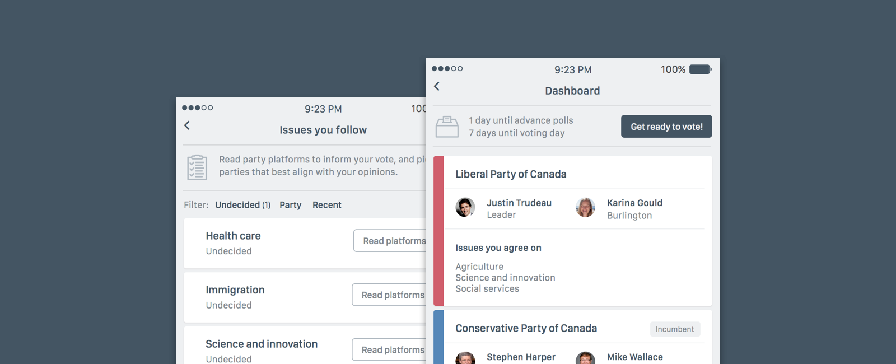
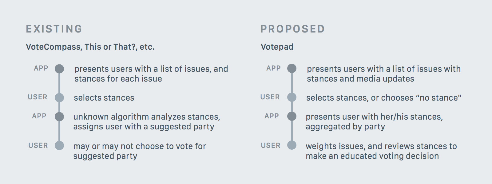
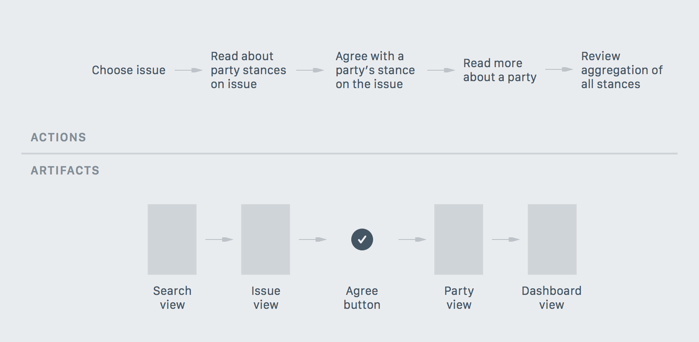
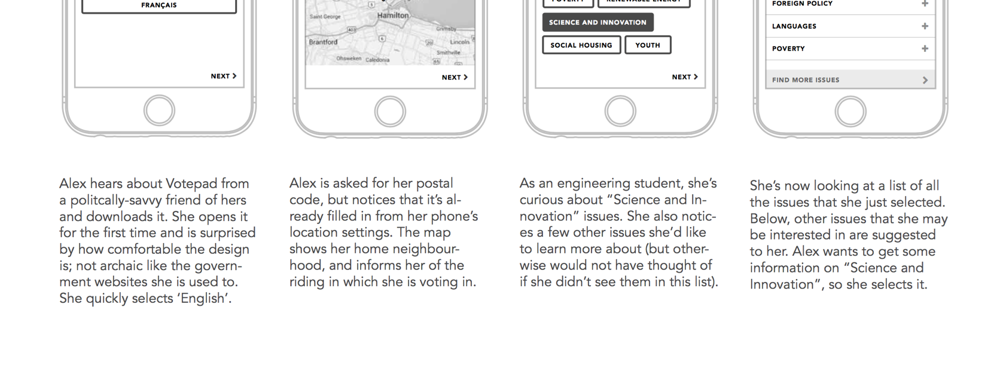
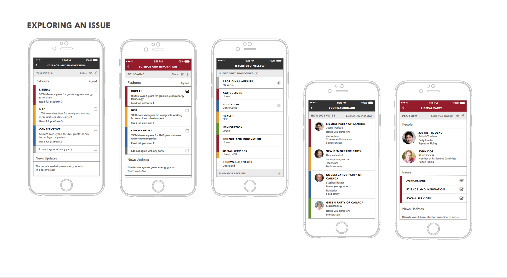
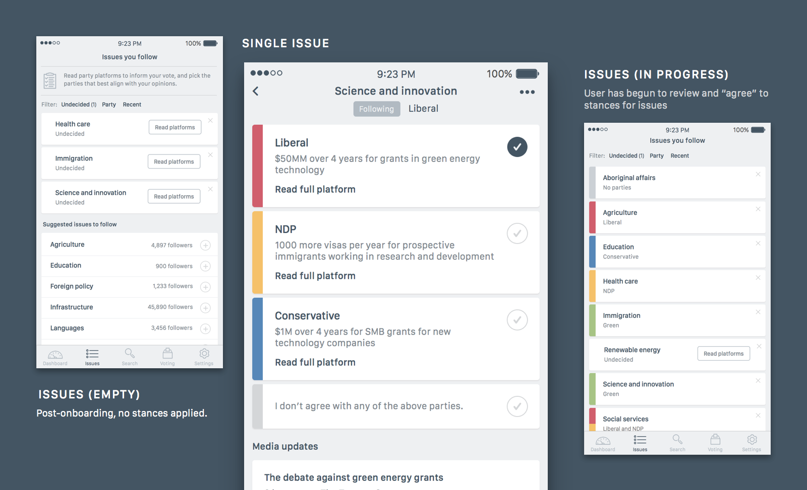
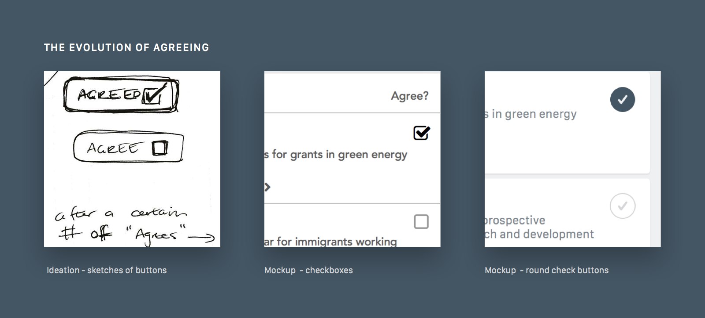

As a side project, I worked on Votepad with my partner-in-crime,
Joey Loi. I pushed most of the pixels, and we worked together on the ideation and research processes. Promoting voter turnout was a social issue we were both very passionate about.
Voters do not feel that they are empowered with the necessary information which would enable them to make informed voting decisions. In the 2011 Canadian election, fewer than 40% of eligible voters under 24 voted.

Plenty of nationwide studies exist regarding voter turnout, so we pulled on those to assess areas of concern, and reasons why people weren't voting.
Some of our findings included:
-
Voters reported a high barrier to obtaining actionable information
-
People often do not vote because the process is intimidating
-
The age demographic for lowest voter turnout was between ages 18-24
Based on our research of voter demographics and people who might have a hard time voting, we created three personas. The bases of the personas were real people we had met or spoken to about the issue.
Meet Alex, Wei, and Patty.
In Canada, there were existing websites and such that involved completing a quiz, and then being assigned to an appropriate political party based on the quiz results, sort of à la Seventeen Magazine's "What kind of flirt are you?". To us, the experience felt opaque, and the matching algorithm unclear. Studies had found some of these tools, including CBC's Vote Compass to be Liberal-biased.
We opted for a paradigm that keeps the decision-making in the hands of the voter, where voters choose stances on issues, and then the party they align with based on their stances. We realized that the weight, or the importance of an issue to isn't represented by just counting the number of issues that a voter agrees on with a certain party.

A high-level app/user relationship comparison between existing apps and Votepad.

Mapping actions and their corresponding artifacts.

Alex's story through the Votepad onboarding process.
We saw Votepad really as an integral part of a Canadian's civic life, so we wanted to make sure that it worked with their stories. We used our personas, and weaved Votepad into the stories of their lives in order to fill in gaps of our flows and fine-tune our features so that they would make sense for the people we were building for.
From this exercise, we realized that we should have placed a larger emphasis on educating and instructing a first-time voter, or someone who hasn't voted for a while, on how to vote in the Canadian system.
We evolved a colour scheme that would be neutral to begin with, and light up with colour as a user became more active and started to take stances on issues.

One iteration of the screens involved in exploring an issue.

Another iteration using cards to contain each issue.
We eventually chose to contain items within cards because they helped to visually contain each issue, and we could use entire cards as tap targets, since our thumbs can certainly be a little finnicky at times.
We originally thought of using the word "Agree" written explicitly on a call-to-action beside each party's platform, but it felt verbose on a view already preoccupied with text.

Evolving the "agree" action from a verbose button to a rounded checkmark, resembling a ballot.
We originally thought of using the word "Agree" written explicitly on a call-to-action beside each party's platform, but it felt verbose on a view already preoccupied with text.
We experimented with checkboxes to emulate the experience of voting, and selecting a candidate, so a first-time voter could get comfortable with the paradigm of checking off their favorable choices in a list.
Our first iteration left some people confused as to what the intended action was–it wasn't blatantly obvious that we wanted you to tap the empty checkbox! So we worked on a circular button that actually looked more similar to the circle that appears on Canadian voting cards, and is also more tap-target friendly.
In order for people to achieve the goal of becoming informed about their voting decisions, exploring and forming an opinion about issues is considered the main workflow of the app.
In this workflow, Votepad ultimately aggregates and presents party platforms in a consumable way, and provides the utilities for people to form and store their opinions and compare where they stand on each party's platform.
The 2015 Canadian election saw a resurgence in voting amongst low votership demographics like the 18-24 age range, largely due to a political party that was unfavourable to young people, and guerrila social media tactics surrounding strategic voting. Although Votepad encourages political discussions by allowing voters to share their stances, I think it'd be worth exploring how it could evolve to blur the lines between the discussions taking place on other social media networks, and someone's experience on our app.